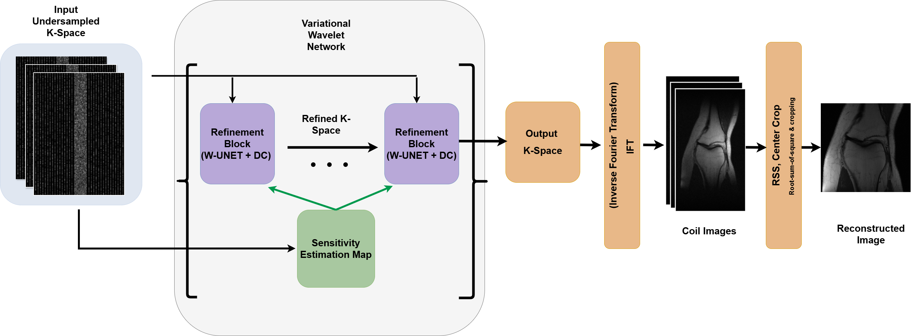
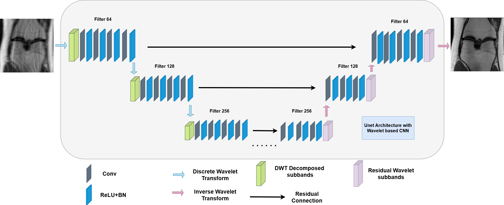

Variational Network with Wavelet-based UNET in Accelerated MRI Reconstruction from Under-Sampled K-space Data
Undergraduate Thesis, 2024–2025
Fully sampled MRI acquisitions require dense traversal of k-space, resulting in inherently long scan times that limit clinical throughput and increase susceptibility to patient motion. A common strategy to accelerate MRI is to acquire only a subset of k-space measurements and reconstruct the missing information computationally. However, direct reconstruction from undersampled k-space is a severely ill-posed inverse problem that introduces aliasing artifacts, noise amplification, and loss of fine anatomical details. Conventional methods such as Parallel Imaging (PI) and Compressed Sensing (CS) partially address these challenges, while recent deep learning approaches have significantly improved reconstruction quality. Nevertheless, preserving high-frequency structures and maintaining robustness under aggressive undersampling remain challenging for existing convolution-based variational network frameworks. In this work, we propose a Variational Network with Wavelet-based U-Net (W-UNet) for accelerated MRI reconstruction from undersampled k-space data. The proposed framework combines physics-guided iterative reconstruction with learnable multi-scale frequency representations. Specifically, standard pooling operations are replaced by Discrete Wavelet Transform (DWT) and Inverse Wavelet Transform (IDWT) modules, enabling lossless downsampling while retaining both low-frequency structural information and high-frequency edge details. Integrated within the refinement and sensitivity map estimation stages of a variational network, the proposed design improves artifact suppression, feature preservation, and reconstruction fidelity for both single-coil and multi-coil settings. Our method achieves state-of-the-art results on the fastMRI knee and M4Raw brain datasets. We further validate the effectiveness of wavelet-based feature decomposition through comprehensive ablation studies, confirming its contribution to accelerated MRI reconstruction.